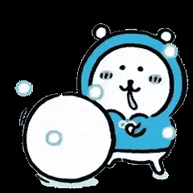

数字员工
公司 · 技术深度AI-Coding + AI-QA，帮研发和测试提效。这是探索者磨手艺的地方——也只有去过深处，才知道怎么把好处送到浅处。
技术深度 · 深
我的 IP ✦ 自嘲熊相信科技平权——做点真正让人幸福的东西。
信念，下一屏 SCROLL ↓
让科技真的去解决普通人的生活问题，带来幸福——
而不是只服务于少数人的效率游戏。
致力于用科技解决的问题，与正在做的项目——点开看每一个的故事。
AI-Coding + AI-QA，帮研发和测试提效。这是探索者磨手艺的地方——也只有去过深处，才知道怎么把好处送到浅处。
技术深度 · 深从一个 idea，到全自动跑起来的 web 产品。把「造东西」的门槛拉到最低——另一种科技平权。
降低门槛 · 桥算命 + 情感陪伴。接住普通人的迷茫和孤独，让 AI 真的够到一个人的情绪，而不是只做工具。
面向生活 · 心手上有两个还没收尾的小东西，都是玩心。
给那个开源小机器人换个灵魂——自己写表情、改语音、调动作。 硬件离生活最近，能摸到。
手捏一个属于自己的 IP 形象。从 prompt 到建模， 把脑子里那个“自嘲熊”一点点抠出来。
合上电脑之后——在路上，更多在独立页的 Life Log。
技术随笔，不常更——写的时候是认真想清楚了一件事。
聊一聊正在做的事，或者任何「如果有个懂代码的人就好」的 idea。